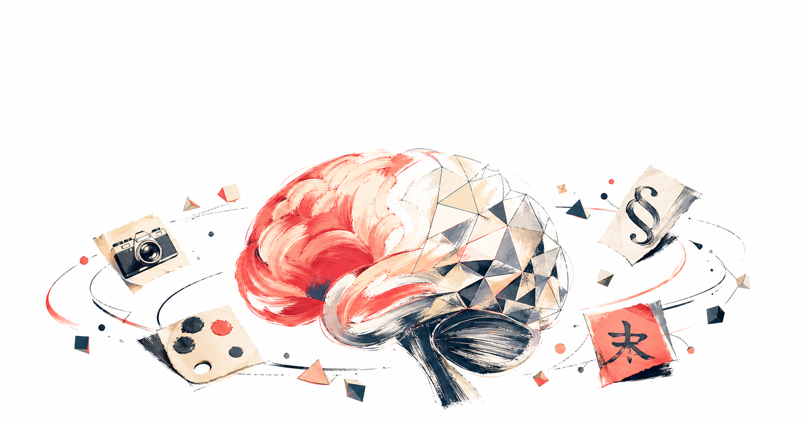

原生推理架構 + 文字渲染 95%+ 準確 + 批量 8 張一致 + API 一行替換 DALL-E
gpt-image-2）是 OpenAI 第一個有「先想後畫」推理能力的圖像模型。Image Arena Elo 1512，比第二名領先 +242 分（可驗證的事實）。最大改變不是「圖更漂亮」，是模型架構從擴散模型升級成原生推理，能在生成前分析意圖、規劃構圖、評估文字排版、自我驗證。
| 對比項目 | DALL-E 3 | GPT Image 2 |
|---|---|---|
| 架構 | 擴散模型，無推理 | 原生推理架構 |
| 文字渲染 | 常拼錯、亂碼 | CJK + 拉丁 >95% 準確 |
| 批量一致性 | 多圖角色飄移 | 8 圖跨圖角色一致 |
| Web 搜尋 | 無 | Thinking 模式可即時搜尋 |
| 解析度 | 最高 1792x1024 | 2K 穩定 / 4K 實驗 |
| Image Arena Elo | ~1264 | 1512（領先 +242） |
免費用戶直接在 ChatGPT 對話框輸入「幫我做一張 [描述]」，會自動跑 Images 2.0 Instant 模式，3-5 秒出圖。Free tier 約每 3 小時 3-10 張動態配額。
純藝術探索、社群快速圖卡、商品照 → Instant 就夠（快、便宜）。複雜多元素構圖、商業印刷素材、需要文字精準、需要批量系列圖一致 → 開 Thinking。Thinking 延遲 10-30 秒，成本是 Instant 2-3 倍，但品質差距明顯。
如果你之前用 DALL-E 3，遷移就是改一個參數。response 結構完全相同，b64_json / url 都不變。唯一注意：DALL-E 3 的 quality="hd" 改成 quality="high"。
關鍵指令：用全大寫前綴 EXACT TEXT: "你要的字串"，prompt 結尾加 Render text verbatim. No extra words. 解析度拉到 1024x1024 以上、品質設 medium 或 high，中文字準確率立刻拉到 95% 以上。
第一坑：以為 n=8 就會角色一致 → 必須加 quality_mode="thinking"。第二坑：中文長文字（>20 字一行）漏字 → 拆成多行、解析度 1536+。第三坑：Thinking 模式吃額度 → 開發階段先用 Instant + low quality 測試構圖。
2026/5/12 之後 DALL-E 2/3 API 完全關閉。如果你有 production 服務還在用 model="dall-e-3" 或 model="dall-e-2"，5/13 早上就會返回錯誤。今天花 30 分鐘搜尋 codebase，把 model 名稱換成 gpt-image-2，順便回歸測試一輪（GPT Image 2 比 DALL-E 3 更字面執行 prompt，部分 prompt 需要重新調整）。
關鍵組合：n=8 + quality_mode="thinking" + prompt 中對角色做「錨點描述」（same character: [外觀], face/outfit must remain identical across all images）。Thinking 模式會建內部角色 embedding，跨 8 圖維持臉、體、服裝一致。純 n=8 不加 thinking 等於 8 次獨立生成，無一致性。
/v1/images/edits 端點上傳作 reference，一致性比 generations 端點更高。用 OpenAI SDK 包裝成 MCP server 或 Skill，Claude Code 或 Cursor 對話中直接說「產一張 XXX 圖」就觸發。這對「研究素材 → 自動產配圖」的工作流是 game changer（建議走 medium quality 控制成本，每張 ~$0.053）。
Thinking 模式可即時呼叫網路搜尋，抓最新視覺參考再生成。突破訓練資料截止（2025/12）的限制。例如「做一張關於 Anthropic 4/17 推出的 Claude Design 的概念圖」，模型會先 web search 抓 Claude Design 的官方視覺，再生成符合品牌的圖。
過去 DALL-E 渲染日文、韓文常出現亂字、混入英文，GPT Image 2 在 CJK 字符達 95%+ 準確。實測一張圖內可同時出現「日文標語 + 英文品牌名 + 數字促銷碼」三語，互不干擾。對接亞洲市場的品牌素材立刻省去後製疊字工序。
API beta 支援 3840x2160（4K landscape）和 2160x3840（4K portrait）。4K high quality 約 $0.41/圖，比外包設計便宜兩個數量級。需要符合 Size 約束：最長邊 ≤3840、雙邊均為 16 倍數、寬高比 ≤3:1。
EXACT TEXT: "..." 標記、prompt 結尾加 Render verbatim. No extra words.、解析度 1024+、品質 medium 或 high。quality_mode="thinking"（純 n=8 等於獨立生成）。Prompt 中描述「same character: [外觀]」當錨點。有參考圖優先用 edits 端點。